보존 침강 후보: 시간·임계값별 비교
19/26으로 미채택, 현재 B1 유지. 지도는 같은 3,688개 평가점의 한 시간 강수입니다.
P01 반환 비와 지상 강수의 시간 분포
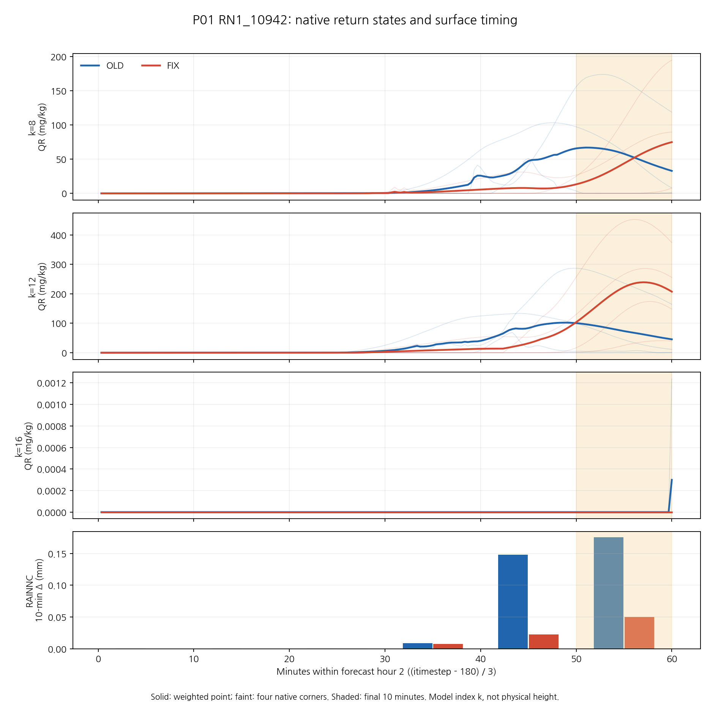
0.1 mm 이상 CSI: 모든 예측시간
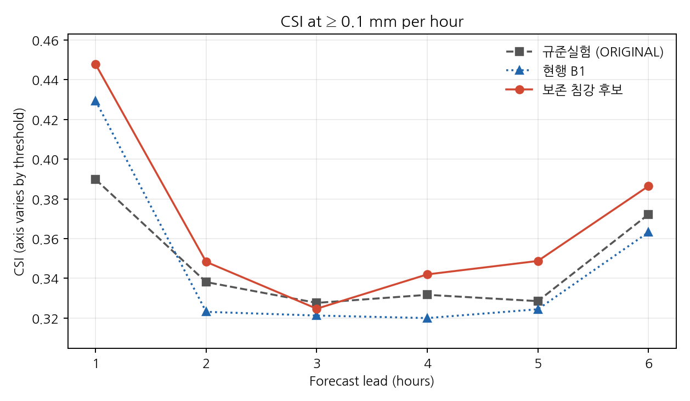
0.5 mm 이상 CSI: 모든 예측시간
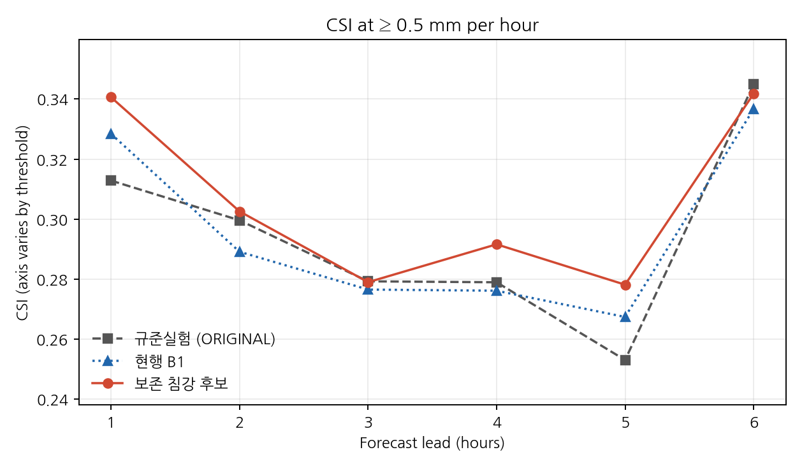
1 mm 이상 CSI: 모든 예측시간
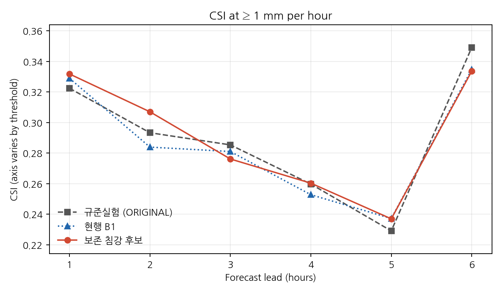
2.5 mm 이상 CSI: 모든 예측시간
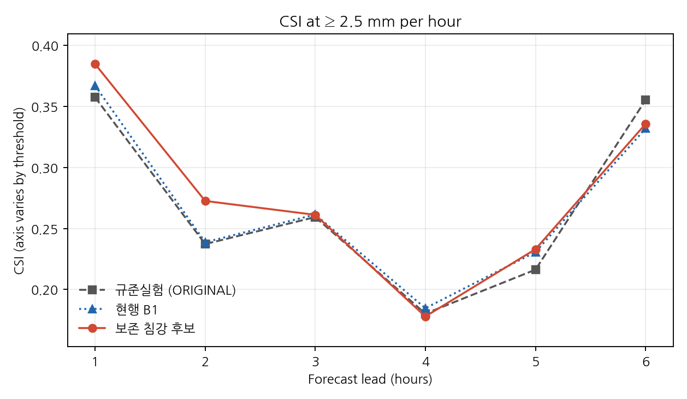
5 mm 이상 CSI: 모든 예측시간
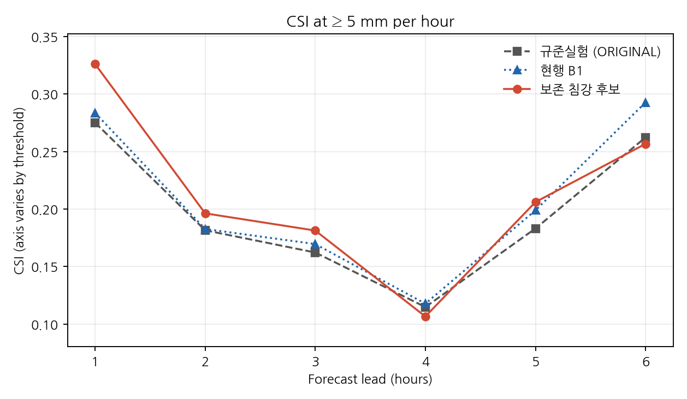
10 mm 이상 CSI: 모든 예측시간
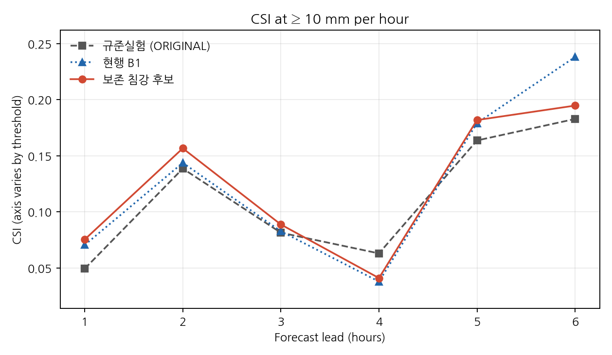
+1시간: 12–13 UTC 한 시간 강수와 차이
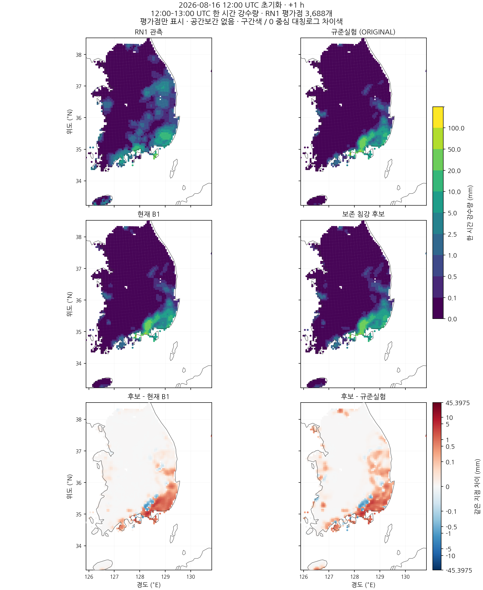
+2시간: 13–14 UTC 한 시간 강수와 차이
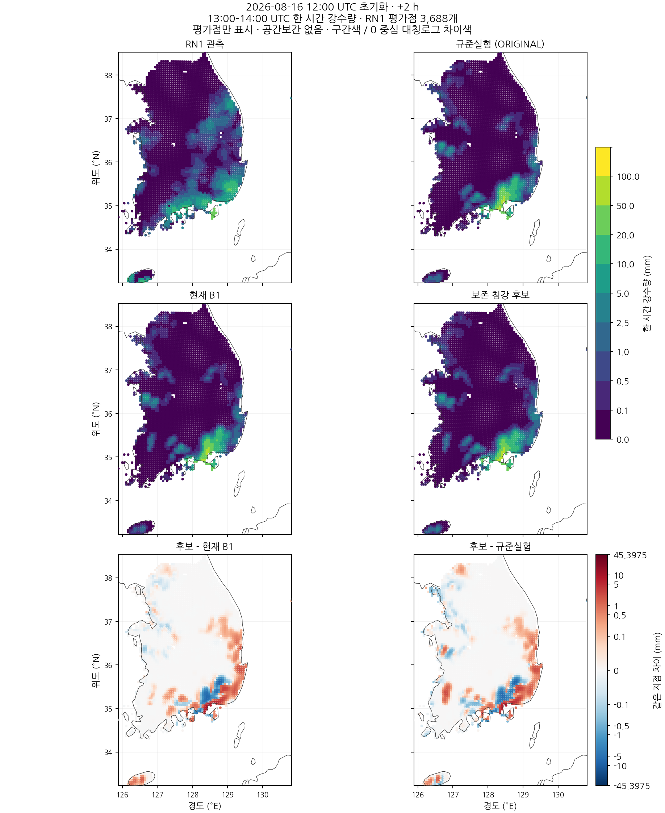
+3시간: 14–15 UTC 한 시간 강수와 차이
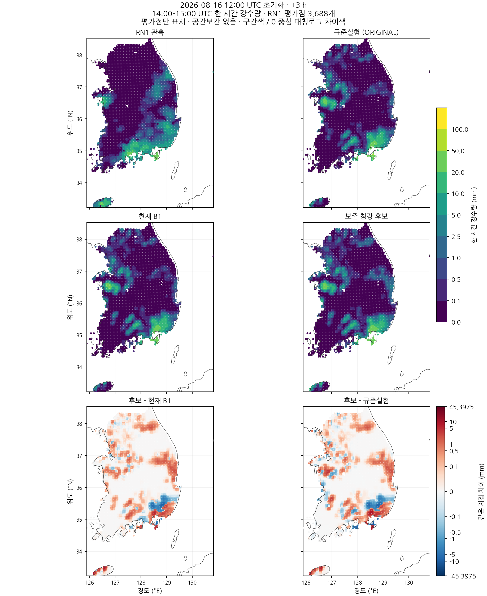
+4시간: 15–16 UTC 한 시간 강수와 차이
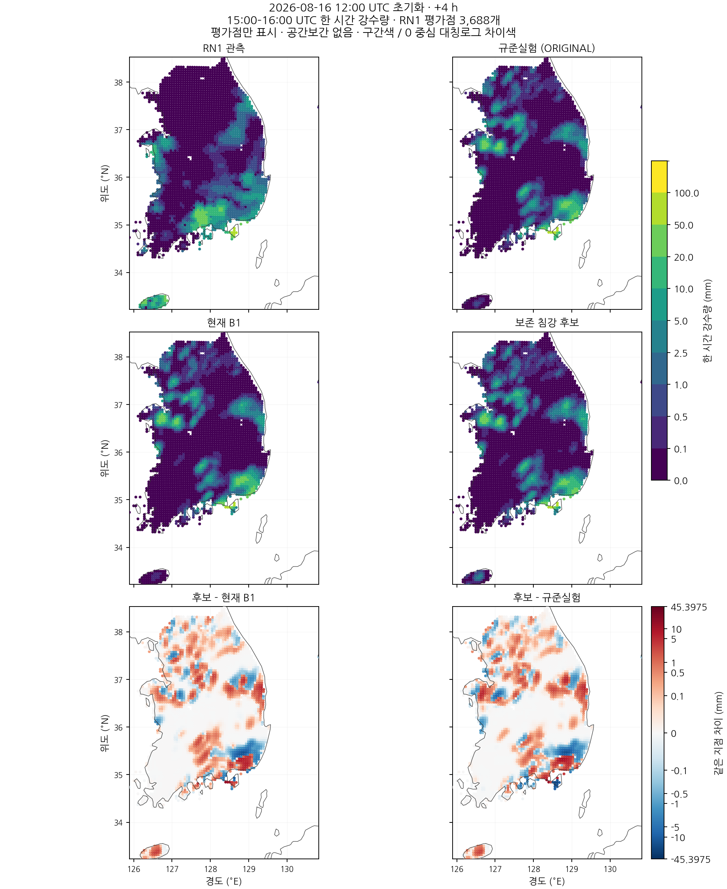
+5시간: 16–17 UTC 한 시간 강수와 차이
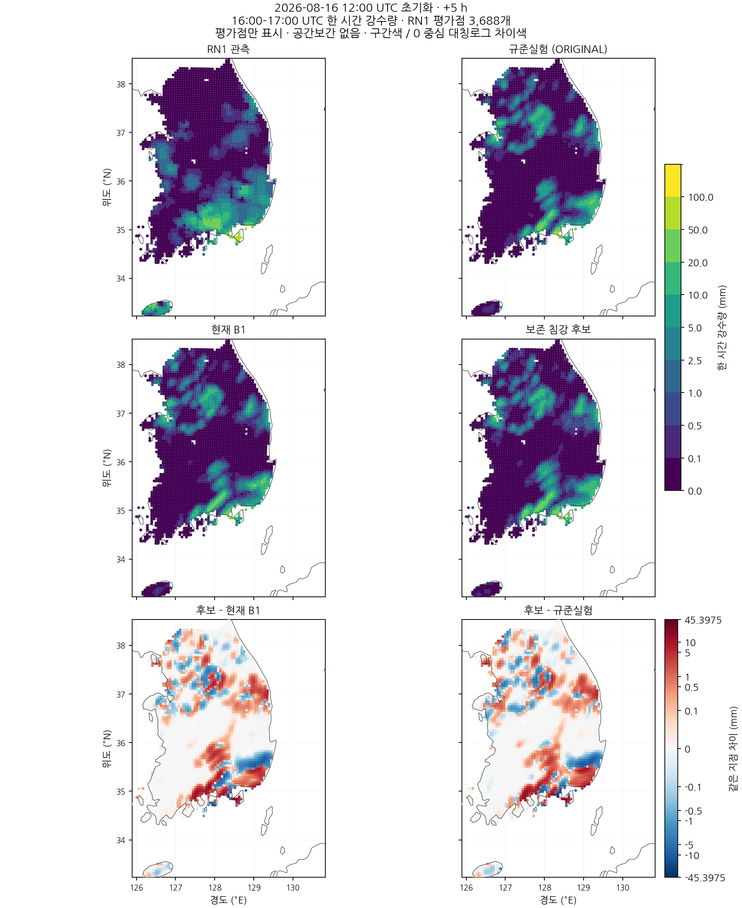
+6시간: 17–18 UTC 한 시간 강수와 차이
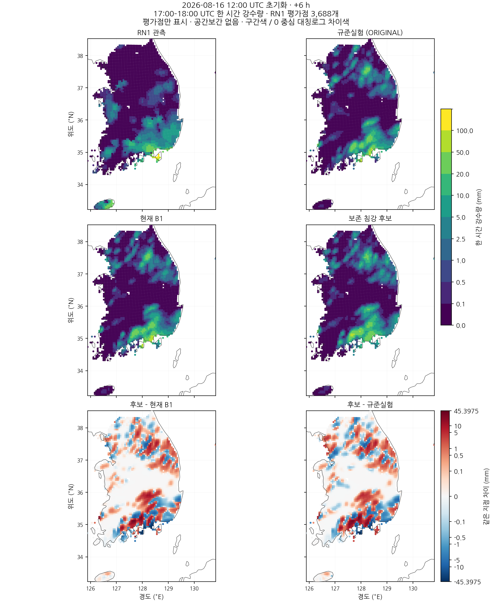
모든 시간·임계값별 수치표